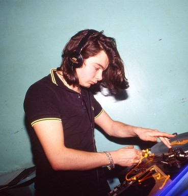
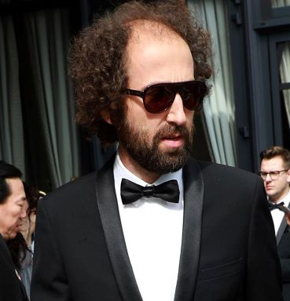

Poznaj pionierów muzyki house
Daft Punk – francuski duet muzyki elektronicznej powstały w 1993 roku w Paryżu,
tworzyli go Guy-Manuel de Homem-Christo i Thomas Bangalter.
Zaliczani często do najbardziej nowatorskich artystów w historii
muzyki tanecznej popularność zdobyli w późnych latach 1990
jako część ich rodzimej fali french house’u.

Guy-Manuel de Homem-Christo

Thomas Bangalter